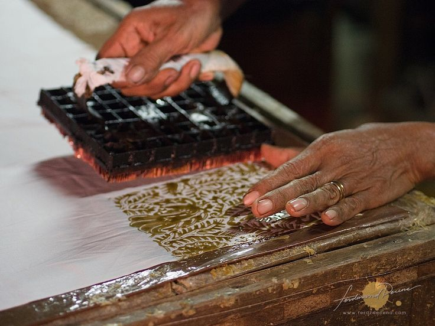
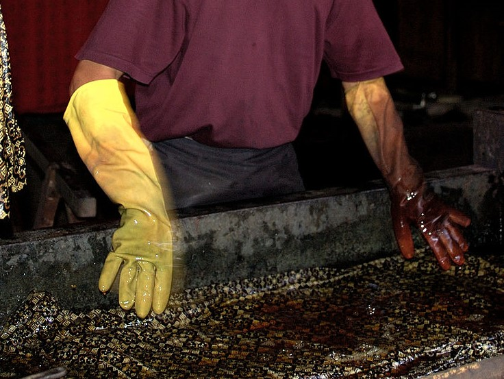
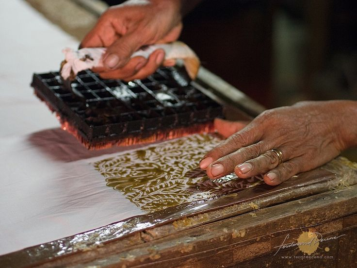
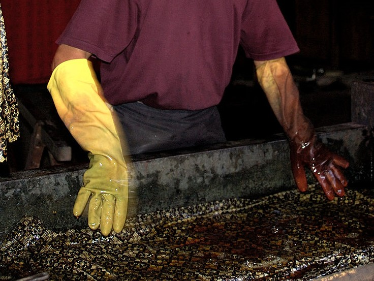

Batik adalah seni tekstil tradisional Indonesia yang telah diakui oleh UNESCO sebagai Warisan Budaya Takbenda pada tahun 2009. Dengan motif yang penuh makna, batik mencerminkan keragaman budaya dan nilai-nilai filosofi dari berbagai daerah di Nusantara.
Sebagai simbol kebanggaan bangsa, batik digunakan dalam berbagai acara, baik formal maupun non-formal. Teknik pembuatan batik melibatkan proses yang kaya seni, seperti menggambar dengan lilin (canting) dan mewarnai kain.


 


